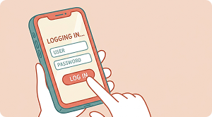
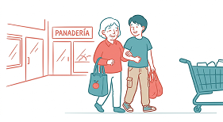
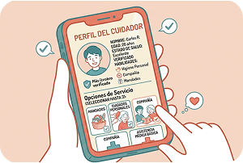
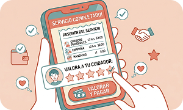

Objetivo
En CERCA buscamos conectar de manera simple y confiable a personas que necesitan ayuda con cuidadores y acompañantes disponibles, teniendo en cuenta sus necesidades, ubicación y disponibilidad.
Queremos que cada persona pueda sentirse acompañada, segura e independiente, mientras que quienes ofrecen sus servicios encuentren nuevas oportunidades de manera organizada.Conectar, acompañar y estar cerca cuando más se necesita.
BENEFICIOS
Acompañamiento
Cerca tuyo
Facil de usar
Disponibilidad
CONSEGUIR CUIDADOR
Primer paso

Ingresá tus datos personales básicos para crear la cuenta y luego completá la ficha de la persona a cuidar detallando su nombre, edad, ubicación, estado de salud, medicamentos que toma, requerimientos diarios y preferencias personales, asegurando así un registro preciso para encontrar al cuidador ideal
Segundo paso

Una vez terminado el registro con tus datos tenes 3 tipos de servicios a elegir, mandados, cuidados personales y compañia, para saber que cuidadores estan disponibles a la hora de hacer esta tarea, dandote diferentes opciones de cuidadores para que puedas elegir a gusto
Tercer paso

Teniendo las diferentes opciones que nos da el servicio seleccionado podemos entrar a ver los detalles de cada persona para saber si es una buena opcion y si nos trasmite seguridad, podemos ver valoraciones, ubicacion, detalles y tambien podemos sacar turno desde ahi. Una vez de elegir el cuidador nos da la opcion de poder hablar por mensaje para poder coordinar el servicio
Cuarto paso

Ya terminando el servicio en tu celular va aparecerle una notificacion ocupando toda la pantalla en donde deberan valorar y pagar a la persona para poder finalizar el servicio.